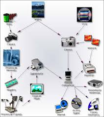

Inicio
La fotografía digital es una forma moderna de capturar imágenes utilizando cámaras digitales. Hoy en día es muy importante porque permite guardar, editar y compartir fotos fácilmente desde cualquier dispositivo como celulares o computadoras.
La fotografía digital es una forma moderna de capturar imágenes utilizando cámaras digitales. Hoy en día es muy importante porque permite guardar, editar y compartir fotos fácilmente desde cualquier dispositivo como celulares o computadoras.
La fotografía digital es el proceso de capturar imágenes mediante sensores electrónicos en lugar de película tradicional. Estas imágenes se almacenan en formato digital, lo que permite editarlas, compartirlas y guardarlas sin perder calidad.
La fotografía digital tiene varias características importantes:

Algunos ejemplos de fotografía digital son:
En esta sección se muestran ejemplos de imágenes tomadas con fotografía digital. Estas pueden variar en estilo, iluminación y composición.